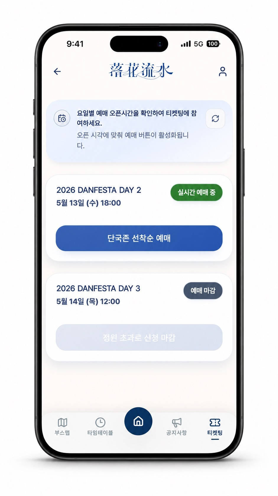
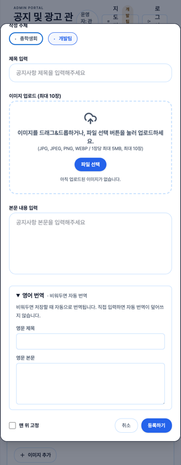
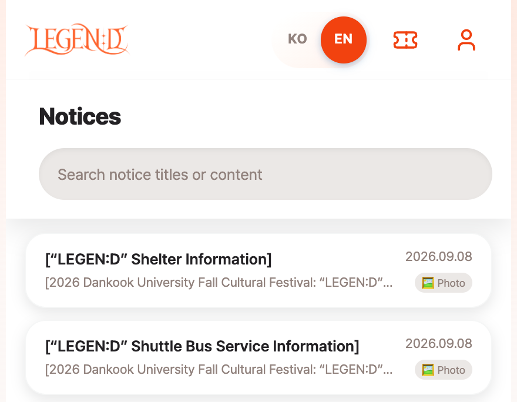

단짠
학생의 예매부터 현장 입장까지, 상태와 실패 경로를 설계했습니다.
 Face Sign 연계 입장
Face Sign 연계 입장


프로젝트 한눈에 보기
대학 축제 웹 서비스 / 팀 프로젝트
- 직접 담당
- 대규모 티켓팅Redis·Lua 기반 동시 예매 처리
- 로그인·회원가입JWT 재발급·예외 처리, 가입 입력·검증·저장
- 다국어 지원번역 처리·실패 대응
- 실사용자
- 6,000명 이상 · 팀 운영 성과
- 운영
- 2026 봄·가을축제 2회
- 협업
- 총학생회 협업 & NAVER Face Sign 연계 입장
- 사용 기술
- Spring BootRedisLuaMySQLDocker
01 · 문제 정의
02 · 동시 예매 설계
재고를 차감하기 전에, “지금 예매할 수 있는 사람”을 정의했습니다.

대기열에 들어온 사람과 예매할 차례가 된 사람은 다릅니다. 중복 확인과 재고 차감을 각각 실행하면 요청 사이에 다른 요청이 끼어들 수 있어, 예매 자격과 재고 처리를 함께 설계해야 했습니다.
기존 슬롯 방식을 WAITING → READY → ACTIVE → DONE / EXPIRED 상태로 바꿨습니다. Lua에서 ACTIVE 상태·유효 시간·중복 신청·잔여 재고를 확인하고 차감과 신청 표시를 묶었습니다. 실패 시 보상 스크립트도 구성했습니다.
예매 자격 검사와 재고 차감·신청 표시를 하나의 Lua 실행으로 묶었습니다. 팀 부하실험에서는 4,000 VU로 2,000장을 발급했고 중복 사용자 0건, HTTP 실패율 0.30%를 기록했습니다. 이 수치는 팀 시스템의 테스트 결과이며 실제 운영 동접과는 별도입니다.
동시성을 설계할 때 재고 차감뿐 아니라 예매 자격·유효 시간·실패 이후의 상태까지 함께 다뤄야 한다는 기준을 얻었습니다. Redis 안에서의 원자적 처리와 Kafka·MySQL로 이어지는 저장 경로는 각각의 실패 조건을 살펴야 했습니다.
03 · 외부 API와 운영
번역이 실패해도 공지는 올라가고, 운영진의 수정은 남아야 했습니다.


가을 축제의 영어 지원은 버튼 번역만으로 끝나지 않았습니다. 운영진이 추가하는 공지·부스·공연 정보도 다뤄야 했기에, 조회할 때마다 번역하는 대신 등록·수정 시 번역을 DB에 저장하고 관리자에게 수정 경로를 제공했습니다.
번역 API 예외가 핵심 업무인 공지 저장을 막지 않도록 분리했습니다. 영문이 없으면 한국어를 제공하고 누락된 값만 후속 보정했습니다. 콘텐츠 수정에서는 원문 변경 여부와 이번 요청의 수동 영문을 필드별로 판단하도록 규칙을 순수 함수로 분리했습니다.
공지 저장을 번역 API 성공 여부와 분리하고, 원문 대체·누락 보정·수동 입력의 우선순위를 정리했습니다. 8월 리팩터링에서는 필드 규칙의 조건 조합 15개를 테스트해 실패 대응과 수정 규칙을 확인했습니다.
외부 API를 붙일 때는 호출 성공보다 먼저, 실패해도 유지해야 하는 업무와 자동 처리·사람의 수정 간 우선순위를 정해야 했습니다.
04 · 인증 복구
다시 로그인하려는 요청이 인증 필터에서 막혔습니다.
- 증상: 로그인도 401컨트롤러에 도달하기 전 차단
- 원인: 공개 경로의 토큰 검사인증 복구 요청과 보호 요청의 경계 확인
- 수정: 공개 경로 건너뛰기로그인·재발급 흐름을 분리
프론트가 만료된 Access Token을 로그인 요청에도 붙이면 컨트롤러에 도달하기 전에 401이 발생했습니다. 요청을 필터부터 추적해, 로그인·재발급 등 공개 경로에서도 기존 토큰을 검사하는 것이 원인임을 확인했습니다.
로그인·재발급·가입 인증 등 공개 경로를 필터 검사에서 제외하고, 보호된 리소스의 인증과 접근을 복구하는 요청의 경계를 분리했습니다. 기존 인증이 만료돼도 사용자가 다시 인증할 수 있는 경로를 확보하는 것이 핵심이었습니다.
만료 토큰이 공개 로그인·재발급 경로를 선차단하던 원인을 제거했습니다. 공개 경로의 토큰 필터 제외를 2026.04.06 수정에 반영했습니다.
05 · 현장으로 연결
예매 이후의 입장 절차까지 연결한 팀 서비스.
총학생회 운영과 NAVER Face Sign 입장에 맞춰 예매·제3자 제공 동의·사전 등록 안내를 연결했습니다. 단짠의 티켓 상태와 네이버의 얼굴 등록 상태는 별도 절차이며, 얼굴 정보 등록·인증은 네이버가 처리합니다.
제 기여는 예매·인증·번역 처리와 관련 화면 연동입니다. 대외 협의, 현장 운영, 프론트엔드와 비동기 저장에는 팀원들의 기여가 있습니다. 영상은 팀 서비스가 현장에서 쓰인 맥락을 보여줍니다.
06 · 배운 점
정상 경로뿐 아니라, 실패해도 이어지는 흐름을 설계합니다.
예매에서는 자격·재고·상태를 함께 다뤘고, 번역에서는 공지 저장과 외부 API 실패를 분리했으며, 인증에서는 복구 경로가 차단되지 않게 했습니다. 기능을 추가할 때 “중간에서 멈추면 사용자와 데이터가 어떤 상태로 남는가”를 먼저 살피는 기준을 얻었습니다.
축제 종료 후에는 관리자 회차 설정·수정 잠금·티켓팅 ON/OFF와 예매 오류 응답을 개선했습니다. 운영에서 얻은 이해를 바탕으로 다음 운영을 준비하는 후속 개발로 이어갔습니다.
코드와 근거
구현과 판단의 근거를 함께 남깁니다.
Spring Boot / Redis / Lua / MySQL / React / Docker
2026.11.03 검토 · 개인 기여와 팀 성과, 완료한 실험과 진행 중인 연구를 구분했습니다.